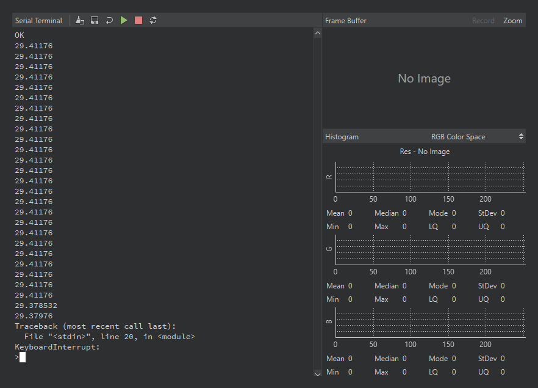

13.1.10. חלונות טרמינל עצמאיים¶
Tools → Open Terminal פותח חלונות טרמינל עצמאיים – כל אחד מהם הוא מעין מהדורה זעירה של OpenMV IDE בחלון משלו, עם מציג חוצץ פריימים (frame buffer), היסטוגרמה וטרמינל אינטראקטיבי, המחובר דרך ערוץ תקשורת לבחירתך. החיבור של החלון הראשי אינו מושפע, ולכן טרמינל עצמאי מאפשר לך לצפות במצלמה שנייה בעוד הראשונה נשארת מחוברת, או לנפות באגים במצלמה הנמצאת בצד הרחוק של רשת.

חלון טרמינל עצמאי על גבי יציאה טורית: הטרמינל האינטראקטיבי משמאל עם סרגל הכלים שלו להרצה / עצירה / איפוס, חוצץ הפריימים (frame buffer) וההיסטוגרמה מימין – הם נדלקים כאשר המצלמה משדרת פריימים בתוך ערוץ הנתונים (in-band).¶
New Terminal מבקש לבחור באחד משלושה ערוצי תקשורת:
Serial port – כל יציאה טורית בכל קצב בָּאוּד (baud rate) (ברירת מחדל 115,200). זה מכסה יציאת USB של מצלמה שנייה, מצלמה המחווטת דרך גשר USB-to-UART, קישור טורי Bluetooth (שמופיע כיציאה טורית רגילה), או כל התקן טורי שאינו OpenMV הזקוק לטרמינל. ביציאת USB קצב הבָּאוּד אינו מגביל את המהירות – נתונים תמיד נעים במהירות קישור ה-USB – אך ביציאת USB של מצלמה הימנע מ-921,600 ומ-12,000,000, אשר מעבירים את המצלמה מ-REPL לפרוטוקול הניפוי (debug) של ה-IDE.
TCP – התחבר לשרת במארח וביציאה שתבחר, או האזן כשרת ביציאה שתבחר.
UDP – אותו זוג תפקידים, על גבי UDP.
ה-IDE זוכר את עשר התצורות האחרונות ומציג אותן בתפריט המשנה Open Terminal לפתיחה מחדש בלחיצה אחת; Clear Menu שוכח אותן.
בניגוד לחלונית הפלט-בלבד של החלון הראשי, טרמינל עצמאי הוא אינטראקטיבי לחלוטין: הוא REPL. הקלד בשורת הפקודה ו-Python יבצע שורה אחר שורה על המצלמה המחוברת, עם היסטוריה והשלמת tab המסופקות על ידי MicroPython עצמו. סרגל הכלים מוסיף מקבילות בלחיצה אחת לרצפי הבקרה הנפוצים – הרצת סקריפט העורך הנוכחי, עצירת הסקריפט הרץ, ואיפוס רך (soft reset) – ואותם פקדי ניקוי, שמירה וגלישת שורות כמו בחלונית הטרמינל הראשית.
חוצץ הפריימים (frame buffer) שמעל הטרמינל הוא חי גם כן. כאשר המצלמה המחוברת משדרת פריימים דחוסים בתוך ערוץ הנתונים (in-band) – מוטמעים באותו זרם כמו פלט ההדפסה שלה – הטרמינל מפענח ומציג אותם, ולחצני Record ו-Zoom פועלים בדיוק כפי שהם פועלים בחלון הראשי. שילוב זה הוא סיפור ניפוי הבאגים ברשת של ה-IDE: מצלמה החושפת את ה-REPL שלה דרך Wi-Fi מקבלת את לולאת העריכה-הרצה-תצוגה המלאה ללא כבל USB מעורב.
13.1.10.1. שידור פריימים בתוך ערוץ הנתונים (in-band)¶
הקידוד שהטרמינל מבין הוא פשוט: בייט 0xFE פותח פריים, בייט 0xFE שני סוגר אותו, ולכל בייט מטען (payload) שביניהם מוגדר הביט העליון והוא נושא שישה ביטים של התמונה הדחוסה – שלושה בייטים של תמונה הופכים לארבעה בייטים של מטען. טקסט רגיל לעולם אינו משתמש בערכי בייט אלו, ולכן פריימים ופלט print() חולקים את הזרם ללא התנגשות: הטרמינל מציג את הטקסט ומציג את הפריימים.
הסקריפט שלהלן לוכד, ממיר כל פריים ל-JPEG, ומדפיס אותו בצורה זו. אריזת הביטים רצה דרך ulab (שאין לו אופרטורי הזחה (shift), ולכן ההזחות נכתבות כמכפלות וחילוקים), והיא מהירה דיה כדי לעמוד בקצב של המצלמה:
import csi
import sys
import time
from ulab import numpy as np
csi0 = csi.CSI()
csi0.reset()
csi0.pixformat(csi.RGB565)
csi0.framesize(csi.QVGA)
clock = time.clock()
def encode_for_ide(data):
n = len(data)
n3 = n - (n % 3)
m = (n3 // 3) * 4
out = bytearray(((n * 8) + 5) // 6 + 2)
out[0] = 0xFE
out[-1] = 0xFE
if n3:
src = np.frombuffer(data, dtype=np.uint8)
dst = np.frombuffer(out, dtype=np.uint8)
b0 = src[0:n3:3]
b1 = src[1:n3:3]
b2 = src[2:n3:3]
dst[1:m + 1:4] = (b0 & 0x3F) | 0x80
dst[2:m + 2:4] = (b0 // 64) | ((b1 & 0x0F) * 4) | 0x80
dst[3:m + 3:4] = (b1 // 16) | ((b2 & 0x03) * 16) | 0x80
dst[4:m + 4:4] = (b2 // 4) | 0x80
if n % 3 == 2:
x = data[n - 2] | (data[n - 1] << 8)
out[m + 1] = 0x80 | (x & 0x3F)
out[m + 2] = 0x80 | ((x >> 6) & 0x3F)
out[m + 3] = 0x80 | ((x >> 12) & 0x3F)
elif n % 3 == 1:
out[m + 1] = 0x80 | (data[n - 1] & 0x3F)
out[m + 2] = 0x80 | (data[n - 1] >> 6)
return out
while True:
clock.tick()
img = csi0.snapshot().to_jpeg(quality=80)
sys.stdout.write(encode_for_ide(img.bytearray()))
print(clock.fps())
זה עובד בטרמינל עצמאי משום שהדפסת ה-REPL ממתינה: המצלמה נחסמת עד שהטרמינל לקח את הנתונים, ולכן כל בייט של הפריים מגיע, ו-JPEG נע במהירות על גבי קישור USB במהירות מלאה (full-speed) או מהירות גבוהה (high-speed). אותו סקריפט עובד ללא שינוי על גבי טרמינל TCP, שהוא נתיב ניפוי הבאגים ברשת שלמעלה. המקום היחיד שבו הוא אינו עובד הוא חיבור הניפוי (debug) הראשי של ה-IDE, שערוץ הפלט שלו מאפס את עצמו בעת הצפה במקום להמתין – שם מציג חוצץ הפריימים (frame buffer) כבר את פריימי המצלמה באופן מקורי, כך שדבר אינו אובד.